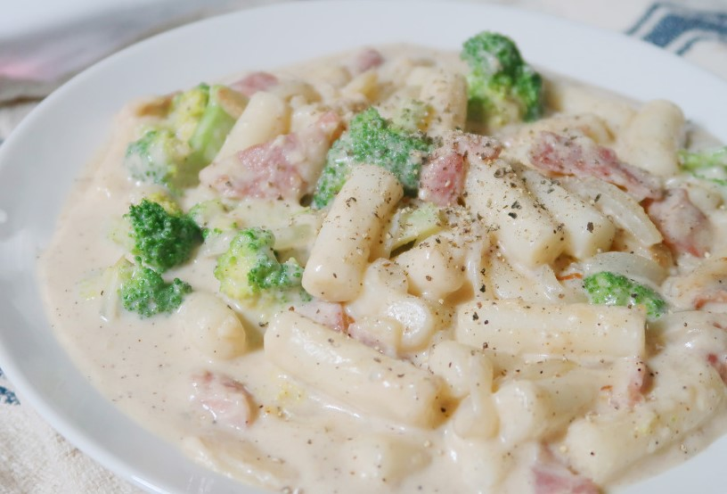
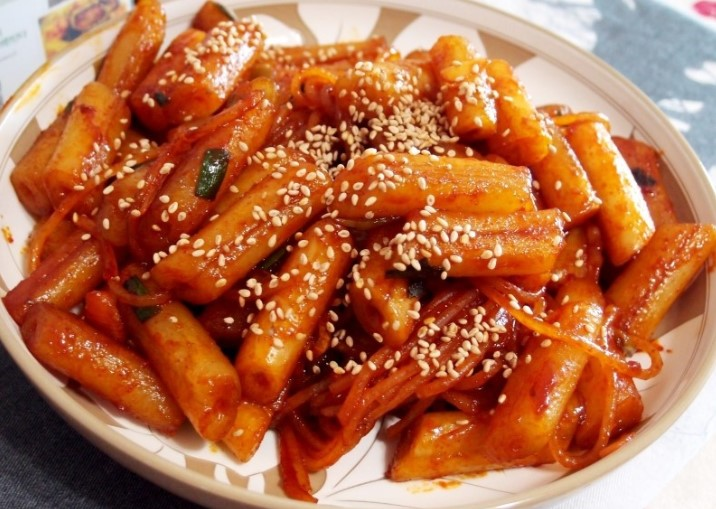
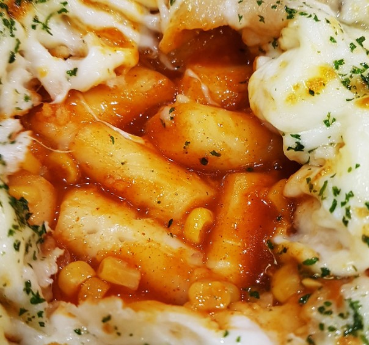

주인장이 잘 못먹는 떡볶이 3가지
까르보나라떡볶이 : 주인장은 느끼한 음식을 잘 못먹음. 극도로 싫어하는 모습을 보임

※먹으라고 권유 시 주인장이 98% 확률로 거부함
※억지로 먹일경우 그 자리에서 99% 확률로 이탈함
기름떡볶이 : 위와 같이 느끼한 음식을 잘 못먹음. 그래도 생각보다는 괜찮음.

※먹을 시 30% 확률로 속이 안좋아짐
※어느정도는 먹을 수는 있어 권유 시 50% 확률로 승낙함
피자떡볶이 : 먹을 수는 있지만 너무 느끼하면 못먹음. 하는 방식에 따라 다름.

※많이 느끼하지 않으면 좋아함
※느끼한 피자떡볶이 권유 시 75% 확률로 삐짐